VPZ Research Center
| homeFantasyz (Dogz)
All my breedz are proudly made from the original PFM breedz! "From scratch." ;-) Sounds I use are either in game, compiled by me, or from Carolyn, whose brilliance is a great inspiration, and her patience is astounding.
These are breed files that allow you to adopt petz from the Adoption Center in the game. Do not directly link to my files, and if you distribute them, please give me credit. Breedz are listed alphabetically.
.dog files need to go in Resource\Dogz The files are zipped, so you need an unzipping program such as WinZip to use them. You do not need any other breedz files or anything to use these. Sound files are available when possible. If sounds aren't available, they may be eventually, but the breed is currently silent (not cat/dog sounds).
***If only one file is available, it is a "unibreed" file that will work in Petz 3, 4, and 5!
If you have trouble downloading, right-click the link and choose "Save Target As..." All the files should work. (Although I can't verify Petz 3 or 4 downloads, since I don't use those games.) Sometimes files are interrupted in download, and you get corrupted messages, especially for large files and especially if you use dial-up. TRY AGAIN LATER.
|
Achihond (FKC Accepted) 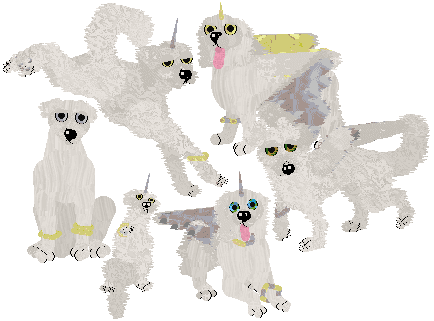 Achihond or "Angel Hounds" got their name from rare sightings by people who believed they were angels. While they are peaceful creatures, achihond are as mortal as you or I. They make their home in the secluded and barren polar regions, where they rarely come into conflict with man or beast. They form family groups but don't hunt as packs, because they take only fish, birds, small mammals, and any other small prey they can acquire. Pressures of famine years have pushed toward the evolution of wings, and some more adventurous animals migrate to other areas to find food, and some have taken a fondness of shiny trinkets. (The small ones are especially adept thieves.) Sightings remain rare, however, because achihond are swift, timid, and camouflaged by the clouds or snow, while they travel by daylight. (This breed is entirely of my invention.) *** Download ***(Uses 'Labrador' sounds from Carolyn's Creations.) |
|
Anime Kid 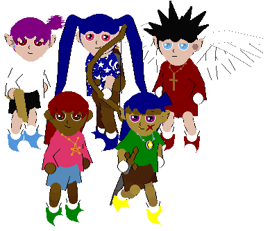 Whether hangng out with demons, solving murder mysteries, or dueling each other with monsters, kids abound in the anime universe. They have big eyes, crazy hair colors, and often abilities above and beyond the adults around them. Adorable and endearing, but there is often more to these kids than meets the eye. (This breed was inspired by characters in many anime series.) *** Download ***(silent) 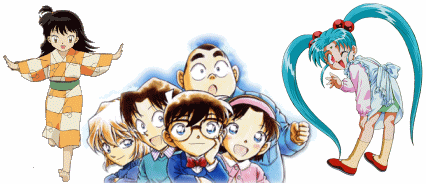 |
|
Astrocus 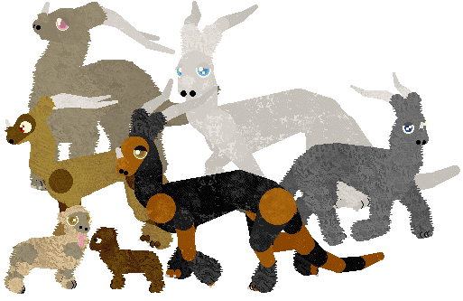 A man traveling through the mountains one night spotted a light shining from behind a wind-ravaged spruce. As the creature raised its long neck, the man realized the light was starlight reflected in its large eyes. When the timid beast saw the man, it retreated into darkness. The man returned to his town with his story, and the creature was named the Astrocus, "star eyes." A gentle herbivorous mammal, believed by some to have evolved from ancient dragons as they moved to higher elevations and colder climates, the astrocus lives in small family groups to medium sized herds. A longer haired subspecies prevails in higher altitudes and colder climates, while a shorter haired variety live in warmer areas, but all are mountain-dwelling. They eat primarily bark, berries, and lichen and avoid contact with other animals (though sometimes clash with mountain goats over territory). In areas near people, the pelt of the rare astrocus is sought by hunters as a prize, and in these regions, the animals do not grow quite as large and have adapted the habit of hiding in crevices and remaining mostly nocturnal. (This breed is entirely of my invention.) *** Download ***(Uses 'Zebra' sounds from Carolyn's Creations; they are included in the file and go in "ze" folder in the Dogz folder.) 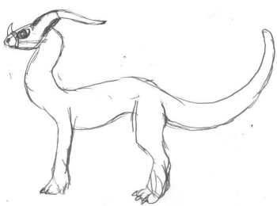 |
|
Barghest (FKC Accepted--both versions) 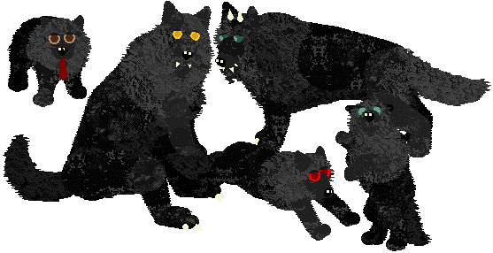 There are two versions of this file. Shown above is the "G" version. To see the "PG" version, click here. According to European mythology, the barghest is a large black dog with large teeth and claws that appeared only at night. Seeing the dog foretold death, and anyone who caught a glimpse of it would surely die. The dog itself is a specter, an omen, perhaps not violent... The barghest has equivalents of other names, the Gwyllgi, the Dog of Darkness, or the Mauthe Dog. (This breed was inspired by European lore.) "G" Version: *** Download ***"PG" Version: *** Download *** (internal sounds) |
|
Beholder (FKC Accepted) 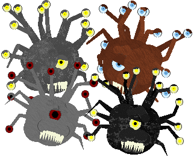 A spherical beast 8 feet in diameter that includes a large central eye and 12 eye stalks used for 360 degree vision and firing beams of magic energy. This creature has the ability to cast a variety of spells which are inevitably used for evil. They hate all creatures that are not beholders. Beholders live in underground caverns that they carve out using eye rays. (This breed was inspired by the pen and paper RPG Dungeons & Dragons.) *** Download ***(silent) 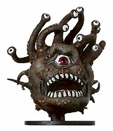 |
Carz *** Download *** (Uses "Bulldog" sounds from Carolyn's Creations.) |
|
Crocotta (FKC Accepted) 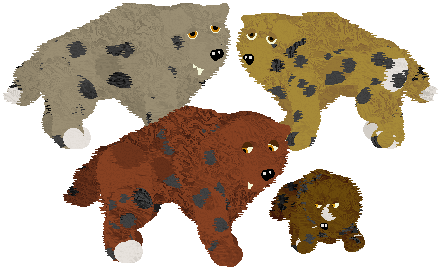 Pliny once described a wolfdog creature with powerful jaws that could bite through anything. The beast Pliny was describing (and exaggerating a bit) is probably the hyena. With some artistic licence, I have created the beast of imagination, a powerful animal with supernatural jaws and strength. The body shape and spots are somewhat hyena-like, merging the fact with the fantasy. *** Download ***(Uses "Bulldog" sounds from Carolyn's Creations.) |
|
Dada 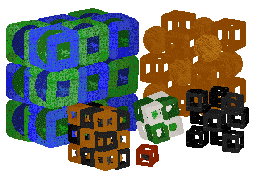 Art imitates life. Sometimes life imitates art. But what happens when art is alive? Can abstract creatures eat, sleep, breathe, and feel? (Product of imagination, as sparked by my brother.) *** Download ***(silent) |
|
Despair (FKC Accepted) 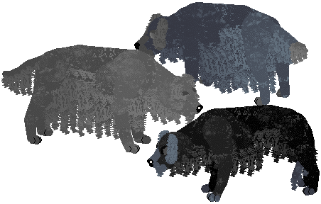 Whenever sadness or misery struck the village, a gray dog was seen wandering the outskirts of town. The dog looked frightening to the villagers, and they called it the bringer of misfortune. So they caught and destroyed the beast, hoping to bring happiness back to their village. But with the dog gone, the sadness and pain returned to the town and lingered there. Illness that was once brief now required weeks of bedrest. After deaths, people felt depressed and were in inconsolable mourning for months. After some time passed, a gray puppy wandered into the home of a widow. Being lonely, she cared for the pup, and as he grew, her sadness subsided as did the sadness of those around her. He absorbed the sorrow, taking it upon himself and transforming him from a perky pup to a sorrowful shaggy adult. These creatures are called Despair, and they bear the burdens of others' suffering, a heavy weight indeed. While they are noble creatures, their appearence makes most, those who misinterpret their purpose, fearful and hateful, and they chase the dogs away. (This creature and story are of my own invention.) Warning: Sometimes causes the game to crash in Windows XP, especially in Petz 5. This problem has patterns (the order pets are taken out...), but otherwise does not seem fixable at this time. To help avoid problems, make sure to back up your pet files, and if using Petz5a, set the number of pups per litter at 1 or 2. I will release an updated file if I can fix the issue, but until then, just try to avoid repeating any actions that cause a crash. (For example, taking out DogA and then DogB might cause a crash while DogB and then DogA doesn't...) :-/ *** Download ***(Uses "Bulldog" sounds from Carolyn's Creations.) |
|
Draken (5 adult sizes) (FKC Accepted) 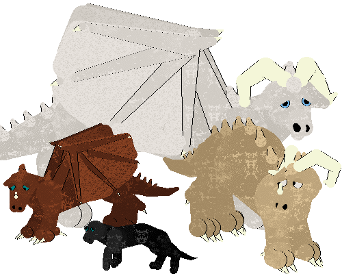 The Draken, or Western Dragon, can have many sizes, colors, and shapes. Depicted in art and literature, a draken might be a wingless lizard the size of a small dog, or it might be a formidable flying beast, larger than a bus and feasting on horses. The variety in size, color, and shape are depicted in this breed file. You can see three adults and one baby above. (This breed was inspired by European lore.) *** Download ***(Uses "Dragon" sounds from Carolyn's Creations.) |
|
Heen 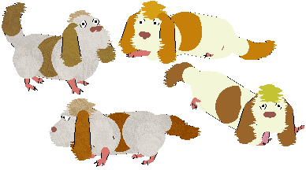 This little dog shows up by Sophie's side. He is a funny creature, without much of a bark, heavier than he looks, and unable to climb stairs on his own. I shan't spoil the film for you, but Heen will hopefully prove to be at least a bit helpful, rather than a complete hinderance. (Based on the film Howl's Moving Castle.) *** Download ***(silent) 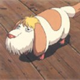 |
|
Manen Wolf (FKC Accepted) 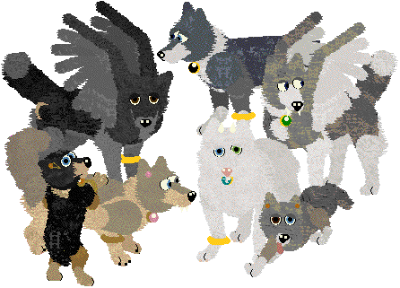 You can read the story of Manen Wolves at this site. (This breed is purely my own invention.) Keep in mind that this does overwrite and can be used interchangeably with my original wolf file available here. (This breed is entirely of my invention.) Earring codes are from Carolyn.*** Download *** (internal sounds) |
|
Nubik 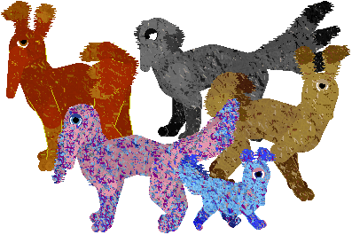 On four moons orbiting a distant planet exist four races of Nubik. Nubik's show a lot of diversity in terns of snouts and ears. They eat mainly small animals (equivalents of insects and crustaceans) and show a division in niches with short-snouted nubits eating surface things, and longer-snouted ones gathering food from borrows. Each moon has its own color of Nubik, considered subspecies -- there has not been much morphological divergence, however. The moon of the gray nubiks is mostly gray rocks with deep chasms and high mountains. Gray nubiks live in caves. The moon of the brown nubik is dry chapparal (scrubland) and desert with few thorny shrubs and sandy soil, where the nubiks build dens under rocks. The moon of the red nubik is a thick rainforest full of brilliantly colored species and hundreds of tree species creating a closed canopy. Red nubiks live in hollow stumps. The pastel nubiks live on a moon of mostly grasslands with gentle streams and many varieties of wildflowers. Pastel nubiks are more open and prefer to rest in the shade of small trees that dot the landscape. (Nubiks are my own original creation.) (These files overwrite each other.) *** Red Nubik ****** Brown Nubik *** *** Gray Nubik *** *** Pastel Nubik *** Required Fur Files |
|
Pet Rock (FKC Accepted) 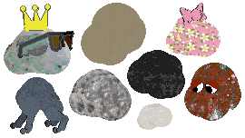 *** Download *** (silent) |
|
Phooey (FKC Accepted) 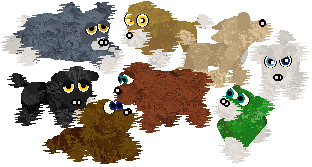 A cute little breed reminiscent of toy dog/poodle mixes. The Phooey is a companion breed who doesn't care for shows. Phooeys are clipped in a number of ways depending on their owners'/groomers' preferences. (This breed is entirely of my invention.) *** Download ***(Uses "Dachshund" sounds from Carolyn's Creations.) |
|
PuppyBonez (FKC Accepted) 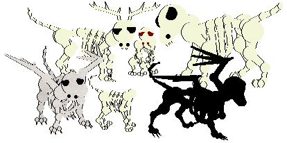 What skinless soulless beast is this, untimely roused from its eternal slumber? Perhaps these creatures met unpleasant fates in life. Perhaps they have returned for some holy or unholy purpose. Maybe they are merely the results of a bored hexer with an overactive imagination... Whatever they are, hopefully you can provide a nice home. (This breed is entirely of my invention.) *** Download ***(Uses "Scottie" sounds from Carolyn's Creations.) |
|
ShelterDogz 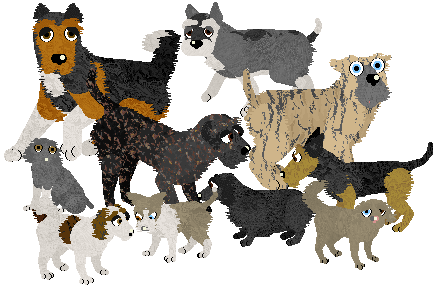 Every year, millions of dogs are euthanized in shelters in the USA, simply because homes are not available. These dogz have done no wrong but are simply the result of overpopulation, lack of spaying/neutering, and intentional and unintentional overbreeding. While they have no "papers," shelter dogs make wonderful pets, as well as doing rescue work, police work, and therapy work. Movies and TV frequently use dogs from shelters as their "stars," as many are very intelligent and eager to please. Shelter dogs can be purebred or mixed, and are the best place to begin any search for a canine companion. In this file, literally hundreds of billions of possibilities exist, as in real life. (You can see some examples of these variations here.) I recommend you do not search for a specific dog but rather take whatever comes to you from the Adoption Center, like the puppy you found by the road or the one that followed you home... Pssst... if you like these, check out Nova's Mixed Breed for Dogz or my Moggiez for catz! *** Download *** |
|
Sylvan Shepherd 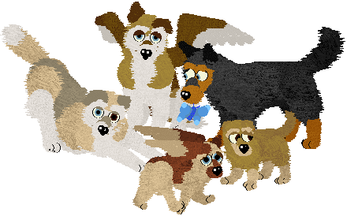 The Sylvan Shepherd, as its name suggests, is fond of forests. In fact, that is where they are always found. These dogz become depressed when taken from their forests, even to the point of not eating. These semi-domestic dogz are usually companions to wandering druidic types, or, as it is rumored, elven or faerie folk. Sylvan Shepherds are believed to be related to herding/pastoral breedz and their loyalty is legendary. They fiercely protect those they choose as friends. The Sylvan Shepherd is often found with one or more companions, be it a person, cat, fox, rodent, or anything else. Even the insects in the woods are drawn to this dog's charismatic ways. If a Sylvan Shepherd is to befriend you, you have a lifelong companion and tireless protector. Winged dogz began showing up among the populations some time ago. According to legend, a young female dog was being kept by an elven woman. As the dog protected the woman's family, she protected her dog's new puppies and cherished them. One terribly dry autumn day, however, a fire spread through the village. The woman carried the pups to safety and got her children out too, but in the confusion, the mother dog was still searching the house for the family and was trapped inside... After this tragedy, the woman cast a spell, providing the puppies and any future descendents in wings, so they could save themselves as well as saving their friends. (This breed is entirely of my invention.) The overwriting file overwrites the Mutt, so save a backup of your file! Download: Overwriting / Non-Overwritinginternal sounds |
|
Unicorn 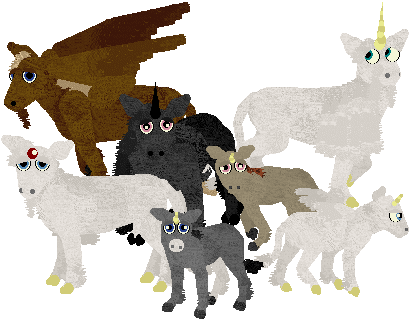 Unicorns, while often depicted in modern artwork as horned horses, are often shown is older art as much smaller and different-looking animals. The unicorn was believed to have the head of a horse, feet of a goat, and tail of a lion. The unicorn's horn was probably used as defense, but it was prized by chemists (anchient pharmacists) and others as a universal cure of sorts and also prized for magical properties. If a unicorn's horn was removed, it was believed that a priceless ruby, the source of the unicorn's powers, was at the base of the horn. This ruby is not seen in all unicorns, perhaps it is crystalized blood found only among the oldest and wisest of these creatures. (This breed was inspired by European lore.) *** Download ***(Uses "Galiceno" sounds from Carolyn's Creations.) |
|
Vulpoon 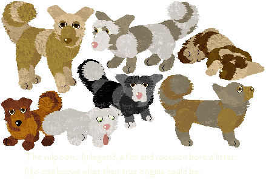 The vulpoon is clearly canine but seems to have characteristics similar to a badger or raccoon. They are gentle beasts, easily tamed. (This breed is purely my own invention.) *** Download ***(Uses "Poodle" sounds from Carolyn's Creations.) |
|
Winged Foxes 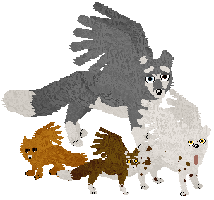 A canine breed of unknown origins. (This breed is purely my own invention.) Leopard spot codes are from Carolyn. *** Download *** (internal sounds) |